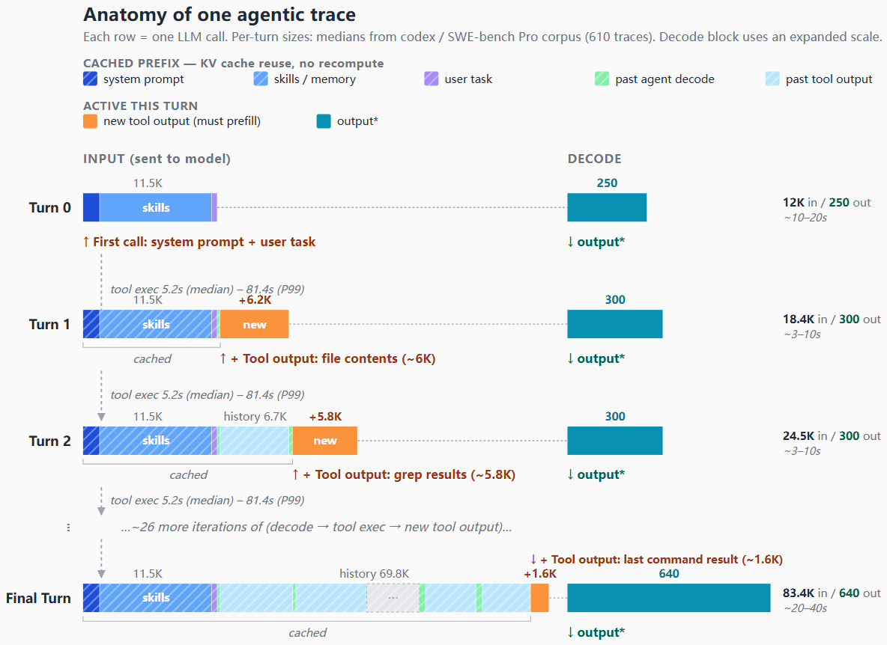
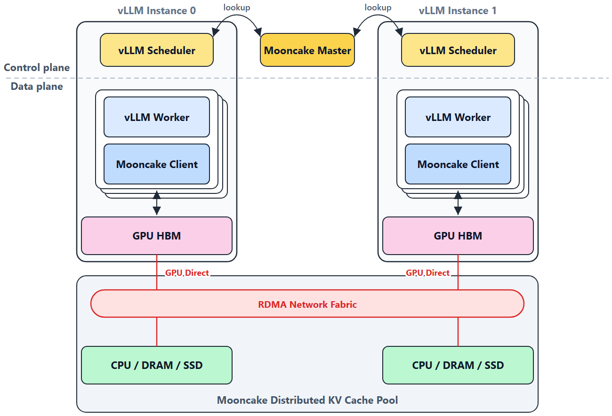
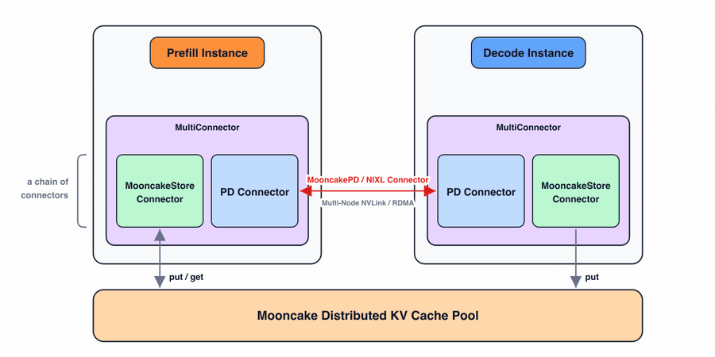
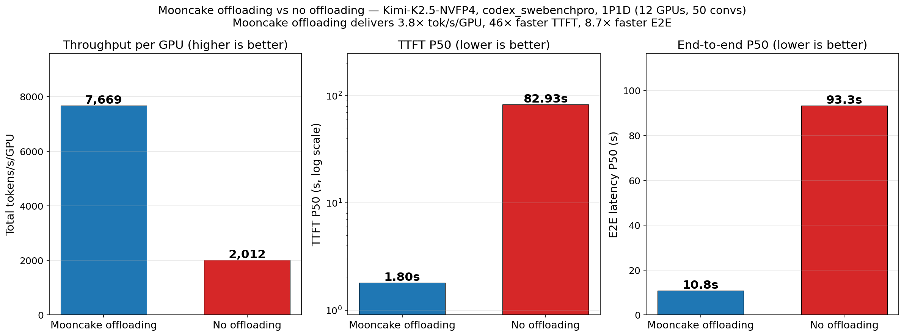
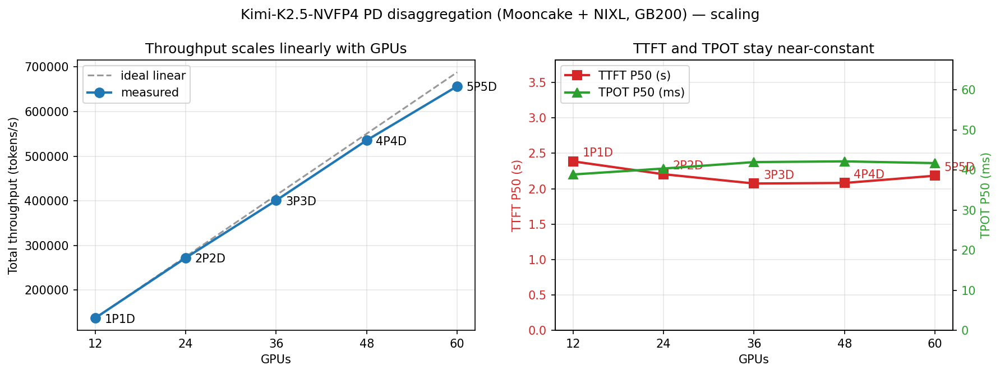

每个vLLM副本都有一份自己的KV cache。横向扩展到一个负载均衡器后面时，跨实例的前缀复用就崩了：同一段共享提示词在不同副本上被反复重算。Mooncake的做法是把KV缓存在整个集群里池化。
在真实agentic trace上，这套方案把缓存命中率从1.7% 提升到92.2%，TTFT下降46倍，端到端延迟下降8.6倍。本文梳理vLLM官方与Mooncake的合作实现：为什么单节点prefix caching在agent负载下失效，Mooncake Store如何做成分布式KV池，以及它的性能与后续规划。
随着Claude Code、OpenClaw这类LLM agent兴起，推理负载正发生根本性变化：LLM不再只是聊天机器人，而是能规划、推理、朝复杂目标行动的自主长时运行系统。agentic工作负载的结构很独特：长视界、多回合的循环，在『推理步』（模型处理上下文产生中间思考）与『动作步』（模型发工具调用、接收外部输出）之间交替。
vLLM团队在Codex和GPT-5.4的SWE-bench Pro轨迹上做了量化：到第30回合上下文已长到约80K token，最长可超180K；但每回合通常只新增几百到几千个token，其余全是模型已经见过的前缀。整个数据集平均输入输出token比为约131:1。如果能缓存这些前缀，缓存部分的prefill几乎免费，每回合真实成本只剩新增的delta。

但把KV缓存放到本地（CPU DRAM或磁盘）对agentic负载有两个硬伤。其一是容量与驱逐：100K token上下文可占好几GB（Kimi-2.5 FP8 KV约3.8 GB），一个服务很多长会话的实例很快把本地缓存塞满、触发驱逐。其二是跨实例miss：为了均衡负载，路由器不一定把同一会话的下一回合调度到同一vLLM实例；一旦迁移到没看过该前缀的实例，就得从头重算。
结论是：不能再把推理服务当成一堆隔离的vLLM副本。agentic负载下，实例需要共享一个分布式KV缓存池，提供更大的聚合容量与跨实例缓存命中。
Mooncake是开源的、面向KV缓存传输与分布式存储的高性能库。vLLM此前已用MooncakeConnector做prefill-decode（PD）分离，用其传输引擎在GPU间搬运KV缓存；现在进一步用Mooncake Store构建分布式KV缓存池。
Mooncake Store提供一个master服务器 + 一组client。master集群级运行，管理KV块哈希、大小等元数据，监控client健康与可用性，提供服务发现与失效节点清理；client跑在GPU节点上，管理本地CPU/DRAM/SSD资源，彼此通过RDMA连接传输KV缓存。它们共同构成分布式KV缓存池。
vLLM集成复用既有的KVConnector接口（PD分离用的同一抽象）。调度侧：新请求到达时，vLLM对提示词的token块做哈希、向Mooncake master查询匹配的KV块并用结果引导调度决策；worker侧：每个GPU worker内嵌Mooncake client，启动后台线程搬运数据，GPU KV内存注册为RDMA缓冲，通过GPUDirect RDMA直接读写、不经SM也不经CPU内存中转。

SM-free + 零拷贝的GPUDirect RDMA转移。传统的GPU-to-CPU搬运要么用cudaMemcpyAsync（适合大批量但对很多小转移吞吐欠佳），要么启GPU kernel用小步复制（SM参与，可能干扰GPU上其他kernel）。这里走第三条路：用RDMA NIC + GPUDirect RDMA直接在GPU HBM与CPU内存之间搬KV块，无中转缓冲、不占SM，对大量小KV块也高效；Mooncake传输引擎还支持多RNIC池化与拓扑感知选路。
全异步转移。虽然RDMA本身异步，但准备描述符、发起读写仍有不可忽略的CPU开销，且随序列变长（KV块更多）而增长。为避免阻塞延迟GPU kernel启动，所有RDMA操作跑在一个专用后台I/O线程上：从vLLM视角看，转移路径完全异步。
MultiConnector：PD分离 + 分布式KV池组合。集成还通过MultiConnector自然延伸到PD分离：它把多个子connector串起来，各自独立工作互不依赖。prefill实例为PD connector准备KV块，同时经store connector也存一份进分布式池；decode实例写池里的KV块立即对所有prefill实例可见。

试验用Kimi-2.5 NVFP4模型跑在GB200节点上，PD分离：prefill实例TP4、decode实例DP8+EP，这是延迟-吞吐权衡最好的组合。
先看真实轨迹。用前面描述的Codex agentic traces，1P1D共12张GPU部署。分布式KV池把vLLM吞吐提升3.8x，P50 TTFT与端到端延迟分别降46x与8.6x。增益来自命中率从1.7%（只缓存system prompt）暴涨到92.2%（几乎整条前缀都被缓存）。

扩展性测试用Codex派生合成数据集做受控实验：20K公共token（system指令）、首个输入10K、每回合输入2048、输出900、共30回合，会话数随GPU数从75爬到375。为了压测跨节点数据通路，用round-robin路由：请求跨回合被调度到不同节点，常要去上一节点取KV。
没有分布式KV池，这种路由会造成海量缓存miss和严重吞吐退化；而有Mooncake Store，vLLM在所有规模下都稳定维持95% 以上的命中率，并几乎线性地扩展到60张GPU。说明分布式KV池在集群变大的同时，既大幅提升命中率又保持了高效的数据通路。

vLLM团队正在推进几项优化。一是把存储层级从CPU DRAM扩展到NVMe SSD与分布式文件系统，支撑更大的缓存容量（分布式磁盘卸载）。二是支持混合注意力机制的新兴模型架构，各层可能需要不同的缓存策略。三是缓存感知路由：把请求路由器与KV缓存池协同设计，让回合优先调度到已持有相关前缀的实例，最大化本地命中再回落到分布式池。
四是进一步优化数据通路：除RDMA外引入NVIDIA多节点NVLink以支持更快、多路径的KV缓存转移，并探索类似DualPath的方式让prefill与decode实例同时加载KV以榨干聚合带宽。
参考：https://vllm.ai/blog/2026-05-06-mooncake-store